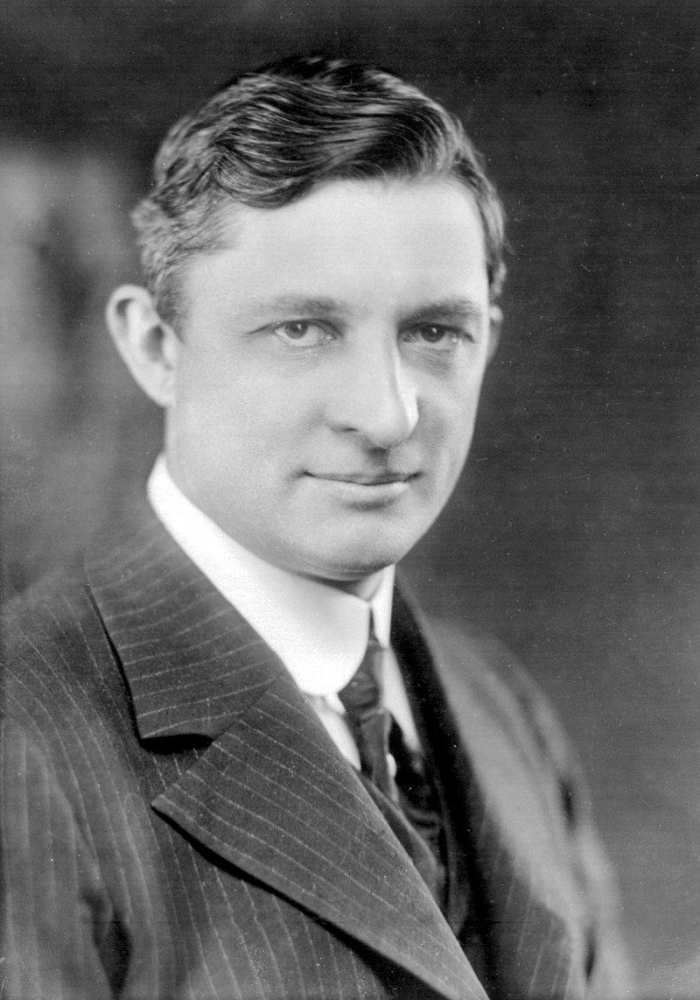

Hello. It is me, your host, the ghost of Willis Carrier. Just like my photo on this website, I was a larger than life figure in the HVAC industry.
Some others may be concerned with the unimportant parts of life, like dietary nutrition or a balanced diet. We are focused on the other type of balancing: a balanced hydronic system that that reliably provides cooling to customers at a low coefficient of performance.
While I may be in Heaven, surrounded by my three wives -- eternal monogamy is confused when you marry three times but never divorce -- I will teach you about systems that you may find on your journey to remove building heat.